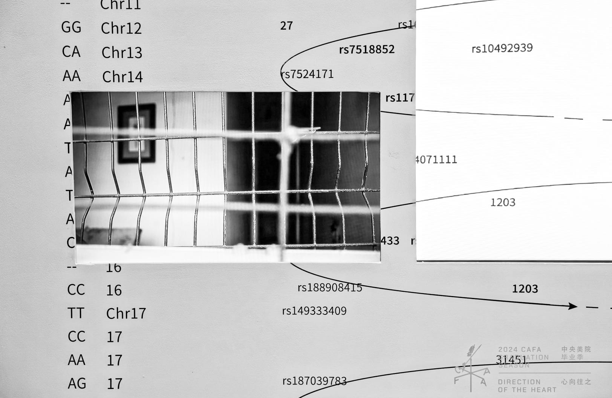
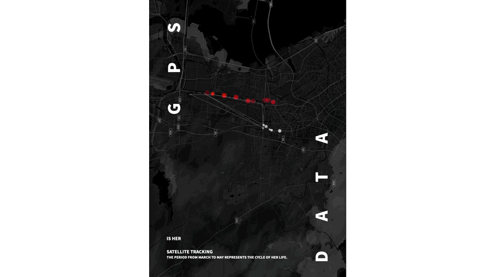
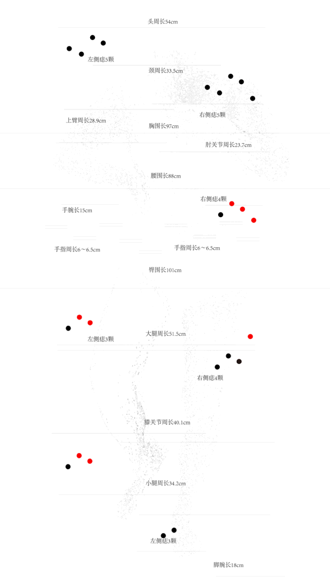
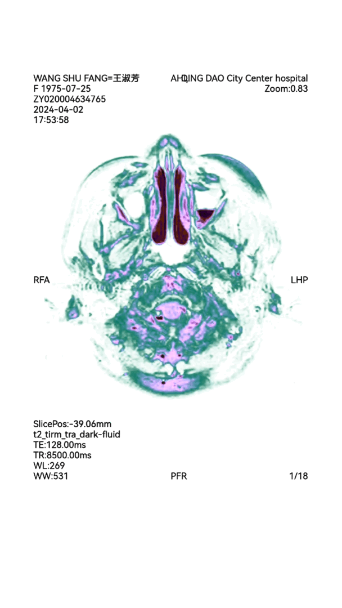

She is Me
What I did
Spearheaded the creation of a large-scale immersive experience by integrating Unreal Engine, Blender, and EEG technology to visualize emotional data and create a novel narrative.
Introduction
The complex interconnections of cognition as well as physiological traits such as blood composition and genetic inheritance between a mother and daughter are capable of being distilled into quantifiable data. I consistently endeavor to identify these underlying ties that unify us across various scales — from macroscopic manifestations to microscopic subtleties — while seeking her presence within myself. By analyzing extensive datasets encompassing behavioral patterns including verbal exchanges, physical interactions, and emotional states; it becomes feasible to reconstruct absent components related to nurturing care and mutual understanding.
As we reflect upon each other's emotional experiences over time, I am able to recollect our overlooked 'intimate relationship.'


Through my individual perspective, I meticulously examine our maternal bond in order to consolidate diverse data points while creating an integrated biological profile. Privately, verbal communication gives way to silence, and subtle nuances in thoughts and bodily expressions infuse daily existence with profound significance.


